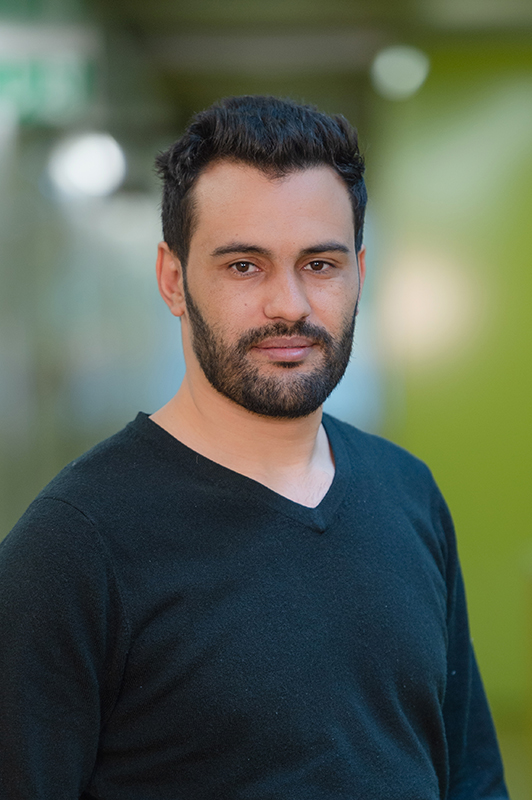

Ahmed Abdeljawad

0412, RICAM
Altenberger Straße 69
4040 Linz, Austria
I am a Senior Research Scientist and FWF Principal Investigator at the Radon Institute for Computational and Applied Mathematics (RICAM), part of the Austrian Academy of Sciences (OeAW), where I work within the Mathematical Data Science group led by Prof. Philipp Grohs. My research develops rigorous mathematical foundations for neural networks and neural operators, with a particular focus on understanding how these models represent and approximate functions and operators in high- and infinite-dimensional settings.
I lead the €439,656 FWF project Neural Networks in Infinite Dimensions and serve as the OeAW partner Principal Investigator in the €1.58 million Horizon Europe MSCA Staff Exchanges project Emerging Methods in Fourier Analysis, PDEs, Graphs and Machine Learning. I received my Ph.D. in Pure and Applied Mathematics from the University of Turin under the supervision of Prof. Sandro Coriasco.
Please feel free to contact me by email or LinkedIn to discuss potential collaborations, research visits, supervision, or scientific ideas.